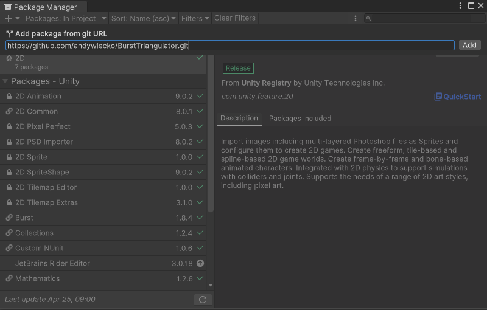
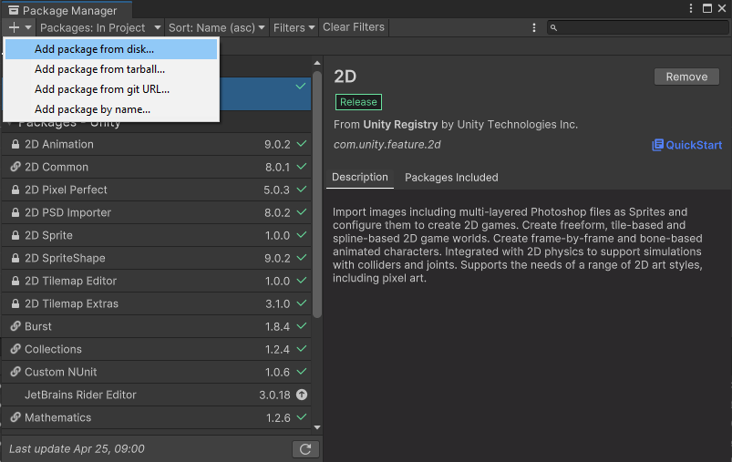

Getting started
Install the package using one of the following methods. Using OpenUPM is recommended.
Follow the tutorial at OpenUPM docs.
Alternatively, you can set up manifest.json manually. Add or modify scoped registries in the manifest:
"scopedRegistries": [
{
"name": "OpenUPM",
"url": "https://package.openupm.com/",
"scopes": [
"com.andywiecko"
]
}
]
Then, in the dependencies section, provide the desired version of the package:
"dependencies": {
"com.andywiecko.burst.triangulator": "2.5.0",
...
Refer to the Unity docs for more details.
Use the package manager via git install: https://github.com/andywiecko/BurstTriangulator.git

Alternatively, you can edit manifest.json manually:
"dependencies": {
"com.andywiecko.burst.triangulator": "https://github.com/andywiecko/BurstTriangulator.git",
...
Note
By default this method will install the latest commit from the main branch of the project repo.
You can specify a tag or commit by providing an additional hash, e.g.
- to install package
v2.4.0 use: https://github.com/andywiecko/BurstTriangulator.git#v2.4.0;
- to install package at commit
f206441912d8b3fda00fe7438db2a1eec4da5a64 use: https://github.com/andywiecko/BurstTriangulator.git#f206441912d8b3fda00fe7438db2a1eec4da5a64.
Clone or download this repository and then select package.json using Package Manager (Window/Package Manager).

Since the package is single-file only, one can place the file Runtime/Triangulator.cs somewhere in the project to use it independently.
Just remember to install the proper package dependencies.
Dependencies
BurstTriangulator has the following dependencies: